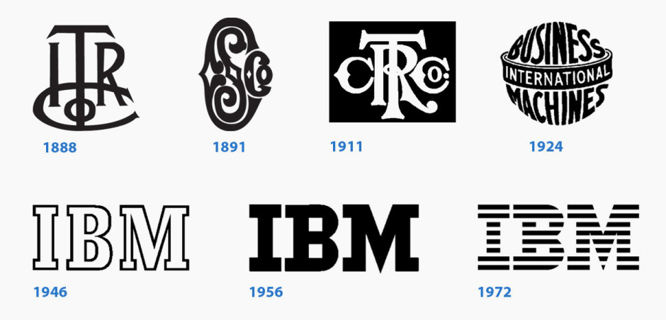

The IBM logo was designed by the pioneering graphic designer and art director Paul Rand, who is celebrated for translating the tenets of European modernism to American corporate communications—introducing motifs from Bauhaus, Cubism, de Stijl, and Constructivism in his commercial work. Until the Brooklyn-bred designer came to the scene, most advertising work was controlled by copywriters.
Along with Eero Saarinen, Isamu Noguchi, and Charles and Ray Eames (pdf), Rand was part of the design dream team that Noyes assembled for IBM. Aligning with Watson’s treatise on good design, Rand understood that a distinguishing mark was essential to a company’s success. “In the competitive world of look-alike products, a distinctive company logotype is one if not the principal means of distinguishing one product from that of another,” Rand wrote in the introduction of IBM’s logo-usage manual. “The value of the logotype, which is the company’s signature cannot be overestimated.”
But Rand approached the logo redesign with more than aesthetics in mind. He made sure that the logo worked in all conceivable applications—brochures, magazine ads, TV commercials, stationery, communication materials, building signage, trucks, and packaging. At that time, this meant anything from diskette sleeves, to boxes carbon paper, printer ribbons, ribbon cartridges and microprocessing cards to the repeating pattern on IBM’s egg-shaped pavilion at the 1964 World’s Fair.